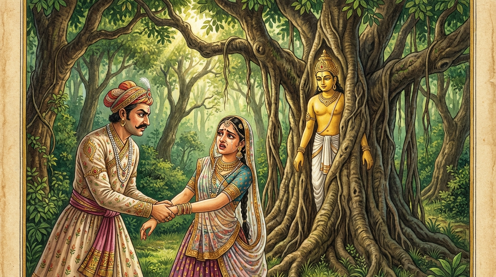

7. සෙග්ගු ජාතකය (217)
සබ්බො ලොකො (සියලු ලෝවැසි තෙමේ) යනාදී වශයෙන් එන මේ ධර්ම දේශනාව ශාස්තෘන් වහන්සේ ජේතවනාරාමයෙහි වැඩවාසය කරන සමයෙහි පණ්ණික නම් උපාසකයෙකු අරබයා දේශනා කළ සේක. මෙහි විස්තර කථාව ඒකක නිපාතයෙහි විස්තර කරන ලද්දේමය. මෙහි වනාහි බුදුරජාණන් වහන්සේ, “උපාසකය, බොහෝ කලකින් පැමිණියෙහිදැ?” යි ඒ උපාසකයාගෙන් විමසා වදාළ සේක. එවිට පණ්ණික උපාසක තෙමේ, “ස්වාමීනි! මාගේ දියණිය නිතර සිනාසෙන මුහුණින් යුක්ත වූවාය. මම ඇයව විමසීමට ලක්කොට එක් කුල දරුවෙකුට පාවා දුන්නෙමි. එහි වැඩකටයුතු තිබුණු නිසා ඔබවහන්සේ බැහැදැකීමට එන්නට අවකාශයක් නොලැබුවෙමි” යි පැවසීය. ඉක්බිති බුදුරජාණන් වහන්සේ ඔහුට, “උපාසකය! මේ තැනැත්තිය දැන් පමණක් සිල්වත් වූවා නොවේ. පෙරත් සිල්වත් වූවාය. නුඹ දැන් පමණක් ඇය විමසා නොබැලුවෙහිය. පෙරත් විමසුවෙහිය” යි වදාරා, ඔහු විසින් ආරාධනා කරන ලද්දේ අතීත කථාව ගෙනහැර දැක්වූ සේක.
යටගිය දවස බරණැස් නුවර බ්රහ්මදත්ත රජු රාජ්ය කරන සමයෙහි බෝධිසත්ත්වයන් වහන්සේ රුක් දෙවියෙක් වී උපන් සේක. එකල මේ පණ්ණික උපාසකයාම “දුව විමසා බලන්නෙමි” යි සිතා ඇයව කැලයට කැඳවාගෙන ගොස්, කෙලෙස් වශයෙන් ඇයව කැමති වන්නෙකු මෙන් අතින් අල්ලා ගත්තේය. ඉක්බිති හඬා වැළපෙන ඇයට හෙතෙම මෙම පළමු වන ගාථාව පැවසුවේය.

“සියලු ලෝවැසි තෙමේ (කාමසේවනයෙන්) සතුටු විය. එහෙත් සෙග්ගු! තී ග්රාම ධර්මයෙහි (කාමසේවනයෙහි) අදක්ෂ වූවාය. දුව කුමරිය! යම් හෙයකින් මහ වනයෙහි (කාම සේවනය පිණිස) අතින් අල්ලා ගනු ලැබූ තෝ හඬන්නෙහිද? දැන් තීගේ ස්වභාවය කවරේද?”
එහි, සබ්බො ලොකො අත්තමනො අහොසි යනු, “දරුව! සෙසු සියලු සත්ත්ව ලෝකයා ඒ කාමසේවනයෙන් සතුටු විය” යන අර්ථයි. අකොවිදා ගාමධම්මස්ස සෙග්ගු යන්නෙහි සෙග්ගු යනු ඇගේ නමයි. “දරුව සෙග්ගු, නුඹ වනාහි මේ ග්රාම ධර්මයෙහි අදක්ෂ වූවාය; ග්රාම්ය වූ, වසල වූ, අකුශල ධර්මයෙහි අදක්ෂ වූවෙහිය” යි කියන ලද්දේ වෙයි. කොමාරිකො නාම තවජ්ජ ධම්මො යනු, “දරුව! කුමරිය! අද නුඹේ ස්වභාවය කුමක්ද?” යන්නයි. යං ත්වං ගහිතා පවනෙ පරොදසී යනු, “යම් හෙයකින් මේ මහ වනයෙහිදී කාම සේවනය සඳහා මා විසින් අතින් අල්වා ගත් කල්හි තී හඬන්නෙහිය, (මාගේ අදහස) නොපිළිගන්නෙහිය. ඔබේ ස්වභාවය කුමක්ද? ඔබ (තවමත්) කුමාරිකාවක්දැ?” යි විමසයි.
ඒ අසා කුමරිය, “එසේය පියාණෙනි! මම කුමරි බඹසර ඇත්තියක්මි. මම මෙවුම්දම් සේවනය නොදන්නෙමි” යි පවසා හඬා වැළපෙමින් දෙවන ගාථාව පැවසුවාය.
“යමෙක් දුකින් පීඩිත වූවකුට පිහිට විය යුතුද, ඒ මාගේ පියාණන් වහන්සේම මහ වනයේදී මට ද්රෝහිකම් කරයි. ඒ මම වන මැද කවරෙකුට ඇසෙන්නට හඬම්ද? යමෙක් (මා) රැකබලා ගත යුතු නම්, ඔහුම මෙසේ සැහැසිකම් කරයි.”
මෙහි අටුවාව යට සඳහන් කළ පරිදිමය. (ඒකක නිපාතය - පරෝසන වර්ගය II පණ්ණික ජාතකය බලන්න).
මෙසේ ඒ පණ්ණික උපාසකයා එකල දියණියව විමසා බලා, ගෙදර කැඳවාගෙන ගොස්, කුල කුමරෙකුට විවාහ කර දී, කම් වූ පරිද්දෙන් මියගොස් පරලොව ගියේය.
බුදුරජාණන් වහන්සේ මේ ධර්ම දේශනාව ගෙනහැර දක්වා, චතුරාර්ය සත්යය ප්රකාශ කොට ජාතක කථාව නිමවා වදාළ සේක. සත්ය දේශනාව අවසානයේ පණ්ණික උපාසක තෙමේ සෝවාන් ඵලයෙහි පිහිටියේය. “එකල දියණිය දැන් මේ දියණියමයි. පියා මේ පියාමයි. ඒ කාරණය ප්රත්යක්ෂ කරගත් රුක් දේවතාවා නම් මම ම වූවෙමි” යි වදාළ සේක.
හත්වන සෙග්ගු ජාතක වර්ණනාව නිමා විය.